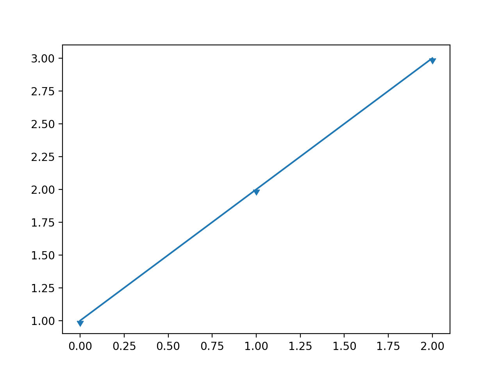
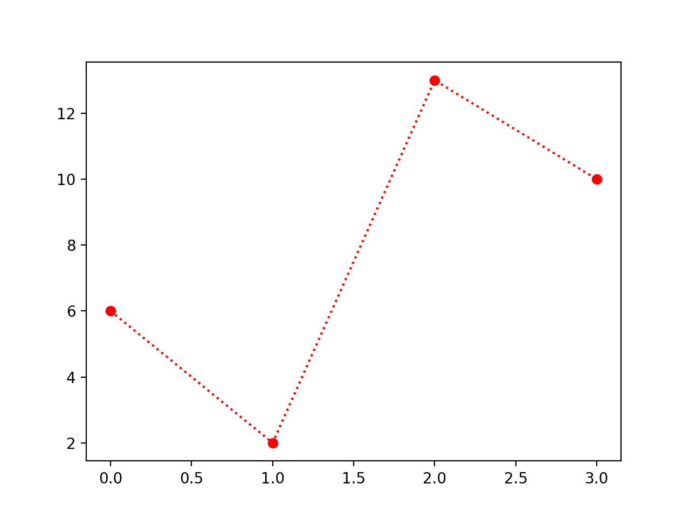
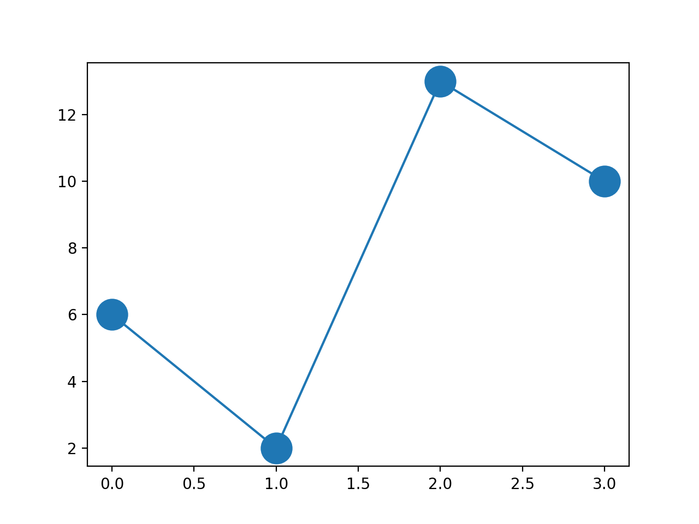
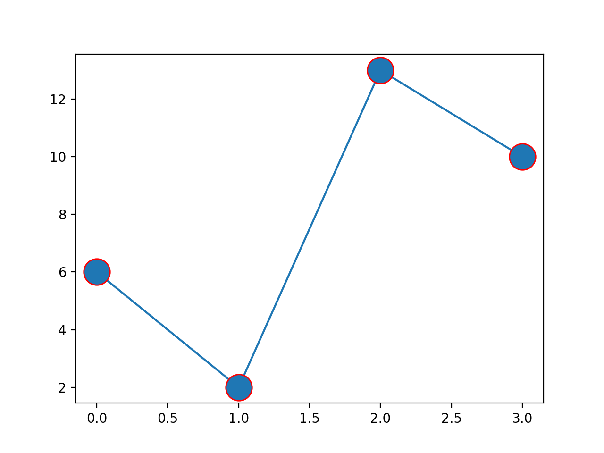
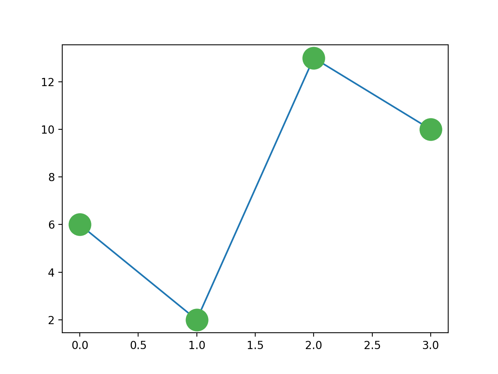

Matplotlib プロットマーカー
プロットの過程で、座標に異なるマーカーをカスタマイズしたい場合は、plot()メソッドのmarkerパラメータを使用して定義します。
次の例では、塗りつぶした円マーカーを定義しています：
例
import matplotlib.pyplot as plt
import numpy as np
ypoints = np.array([1,3,4,5,8,9,6,1,3,4,5,2,4])
plt.plot(ypoints, marker = 'o')
plt.show()
import numpy as np
ypoints = np.array([1,3,4,5,8,9,6,1,3,4,5,2,4])
plt.plot(ypoints, marker = 'o')
plt.show()
表示結果は次のとおりです：

marker定義できる記号は次のとおりです：
| マーカー | 記号 | 説明 |
|---|---|---|
| "." |  |
点 |
| "," |  |
ピクセル点 |
| "o" |  |
塗りつぶした円 |
| "v" |  |
下向き三角形 |
| "^" |  |
上向き三角形 |
| "<" |  |
左向き三角形 |
| ">" |  |
右向き三角形 |
| "1" |  |
下向き三叉 |
| "2" |  |
上向き三叉 |
| "3" |  |
左向き三叉 |
| "4" |  |
右向き三叉 |
| "8" |  |
八角形 |
| "s" |  |
正方形 |
| "p" |  |
五角形 |
| "P" |  |
プラス記号（塗りつぶし） |
| "*" |  |
星印 |
| "h" |  |
六角形 1 |
| "H" |  |
六角形 2 |
| "+" |  |
プラス記号 |
| "x" |  |
乗算記号 x |
| "X" |  |
乗算記号 x（塗りつぶし） |
| "D" |  |
菱形 |
| "d" |  |
細菱形 |
| "|" |  |
縦線 |
| "_" |  |
横線 |
| 0 (TICKLEFT) |  |
左横線 |
| 1 (TICKRIGHT) |  |
右横線 |
| 2 (TICKUP) |  |
上縦線 |
| 3 (TICKDOWN) |  |
下縦線 |
| 4 (CARETLEFT) |  |
左向き矢印 |
| 5 (CARETRIGHT) |  |
右向き矢印 |
| 6 (CARETUP) |  |
上向き矢印 |
| 7 (CARETDOWN) |  |
下向き矢印 |
| 8 (CARETLEFTBASE) |  |
左向き矢印（中央点基準） |
| 9 (CARETRIGHTBASE) |  |
右向き矢印（中央点基準） |
| 10 (CARETUPBASE) |  |
上向き矢印（中央点基準） |
| 11 (CARETDOWNBASE) |  |
下向き矢印（中央点基準） |
| "None", " " or "" | マーカーなし | |
| '$...$' |  |
指定した文字をレンダリングします。例えば "$f$" は文字 f をマーカーとして使用します。 |
次の例では、*マーカーを定義しています：
例
import matplotlib.pyplot as plt
import numpy as np
ypoints = np.array([1,3,4,5,8,9,6,1,3,4,5,2,4])
plt.plot(ypoints, marker = '*')
plt.show()
import numpy as np
ypoints = np.array([1,3,4,5,8,9,6,1,3,4,5,2,4])
plt.plot(ypoints, marker = '*')
plt.show()
表示結果は次のとおりです：

次の例では、下向き矢印を定義しています：
例
import matplotlib.pyplot as plt
import matplotlib.markers
plt.plot([1, 2, 3], marker=matplotlib.markers.CARETDOWNBASE)
plt.show()
import matplotlib.markers
plt.plot([1, 2, 3], marker=matplotlib.markers.CARETDOWNBASE)
plt.show()
表示結果は次のとおりです：

fmt パラメータ
fmt パラメータは、マーカー、線スタイル、色などの基本形式を定義します。
fmt = '[marker][line][color]'
例えばo:r，oo は塗りつぶした円マーカーを表し、:-- は破線を表し、rr は赤色を表します。
例
import matplotlib.pyplot as plt
import numpy as np
ypoints = np.array([6, 2, 13, 10])
plt.plot(ypoints, 'o:r')
plt.show()
import numpy as np
ypoints = np.array([6, 2, 13, 10])
plt.plot(ypoints, 'o:r')
plt.show()
表示結果は次のとおりです：

線の種類：
| 線種マーカー | 説明 | |
|---|---|---|
| '-' | 実線 | |
| ':' | 破線 | |
| '--' | 一点鎖線 | |
| '-.' | 点線 | |
色の種類：
| 色マーカー | 説明 | |
|---|---|---|
| 'r' | 赤 | |
| 'g' | 緑 | |
| 'b' | 青 | |
| 'c' | シアン | |
| 'm' | マゼンタ | |
| 'y' | 黄 | |
| 'k' | 黒 | |
| 'w' | 白 | |
マーカーのサイズと色
マーカーのサイズと色は、それぞれ次のパラメータを使用してカスタマイズできます：- markersize（略称msms）：マーカーのサイズを定義します。
- markerfacecolor（略称mfcmfc）：マーカー内部の色を定義します。
- markeredgecolor（略称mecmec）：マーカーの枠線の色を定義します。
マーカーのサイズを設定：
例
import matplotlib.pyplot as plt
import numpy as np
ypoints = np.array([6, 2, 13, 10])
plt.plot(ypoints, marker = 'o', ms = 20)
plt.show()
import numpy as np
ypoints = np.array([6, 2, 13, 10])
plt.plot(ypoints, marker = 'o', ms = 20)
plt.show()
表示結果は次のとおりです：

マーカーの外枠の色を設定：
例
import matplotlib.pyplot as plt
import numpy as np
ypoints = np.array([6, 2, 13, 10])
plt.plot(ypoints, marker = 'o', ms = 20, mec = 'r')
plt.show()
import numpy as np
ypoints = np.array([6, 2, 13, 10])
plt.plot(ypoints, marker = 'o', ms = 20, mec = 'r')
plt.show()
表示結果は次のとおりです：

マーカー内部の色を設定：
例
import matplotlib.pyplot as plt
import numpy as np
ypoints = np.array([6, 2, 13, 10])
plt.plot(ypoints, marker = 'o', ms = 20, mfc = 'r')
plt.show()
import numpy as np
ypoints = np.array([6, 2, 13, 10])
plt.plot(ypoints, marker = 'o', ms = 20, mfc = 'r')
plt.show()
表示結果は次のとおりです：

マーカー内部と枠線の色をカスタマイズ：
例
import matplotlib.pyplot as plt
import numpy as np
ypoints = np.array([6, 2, 13, 10])
plt.plot(ypoints, marker = 'o', ms = 20, mec = '#4CAF50', mfc = '#4CAF50')
plt.show()
import numpy as np
ypoints = np.array([6, 2, 13, 10])
plt.plot(ypoints, marker = 'o', ms = 20, mec = '#4CAF50', mfc = '#4CAF50')
plt.show()
表示結果は次のとおりです：

その他の拡張
クリックしてノートを共有
<p style="font-size:14px;">ノートはこの記事の内容を拡張したものである必要があります！</p><br> <p style="font-size:12px;"><a href="../tougao.html" target="_blank">記事の投稿は、こちらをクリック</a></p> <p style="font-size:14px;"><a href="../w3cnote/runoob-user-test-intro.html" target="_blank">登録招待コードの取得方法</a></p> <h3 class="text-muted"><i class="fa fa-info-circle" aria-hidden="true"></i> ノートを共有する前には<a href=";.html" class="runoob-pop">ログイン</a>が必要です！</h3> <p><a href="../w3cnote/runoob-user-test-intro.html" target="_blank">登録招待コードの取得方法</a></p>